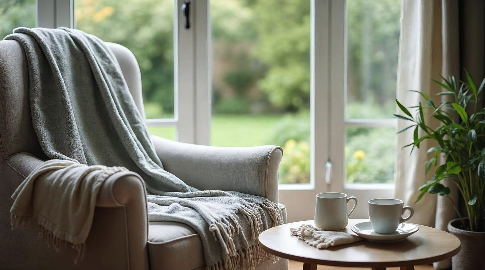
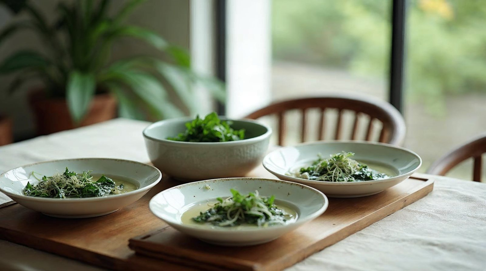
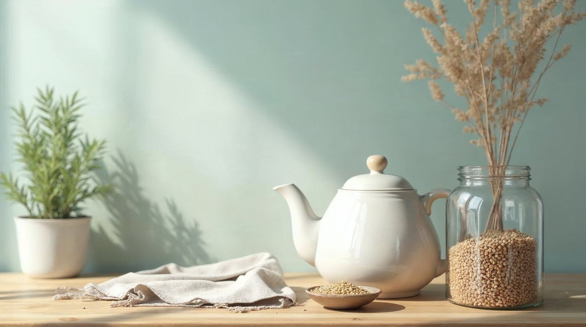
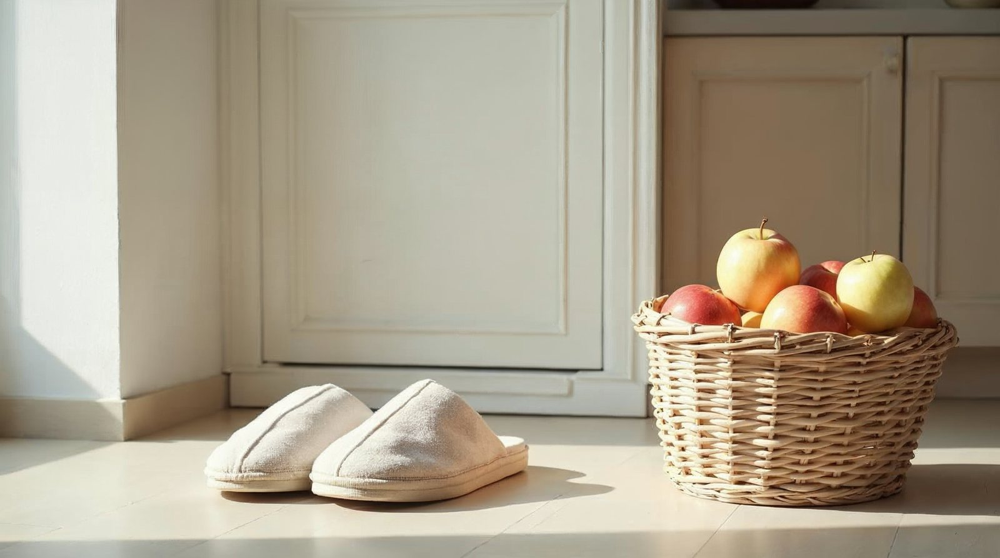
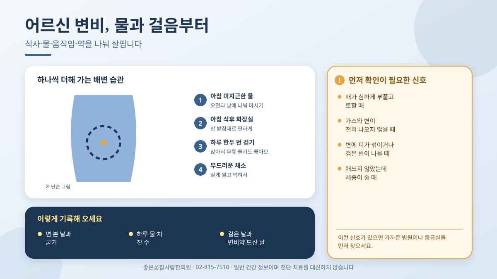

이종호 한의사 감수좋은꿈참사랑한의원 대표원장 (한의사 면허번호 19769)발행 2026-11-26 · 수정 2026-11-26
이 글의 차례
아침마다 화장실 문 앞에서 한참을 서성이시는 어르신이 계십니다. 들어가서 오래 앉아 계셔도 시원하게 나오지 않고, 나와서는 배가 묵직하다며 아침을 거르십니다. 자녀분이 걱정되어 모시고 오시면 어르신은 "나이 들면 다 그렇지" 하고 웃어넘기십니다.
정말 나이가 들면 다 그런 걸까요. 연세가 들수록 변비가 흔해지는 것은 맞습니다. 하지만 흔하다는 것과 그냥 두어도 된다는 것은 다른 이야기입니다. 변이 오래 막혀 있으면 입맛이 떨어지고, 힘을 주다 어지러워지기도 하며, 잠과 기분까지 흔들립니다.
진료실에서 어르신 변비를 볼 때 저는 배만 보지 않습니다. 하루에 무엇을 얼마나 드시는지, 물은 몇 잔 드시는지, 걸음은 얼마나 걸으시는지, 어떤 약을 드시는지를 하나씩 여쭙습니다. 어르신의 변비는 대개 한 가지 이유보다 여러 가지가 겹쳐서 생기기 때문입니다.
이 글에서는 어르신 변비가 왜 잘 생기는지, 젊은 분의 변비와 무엇이 다른지, 집에서 가족이 함께 살필 수 있는 것은 무엇인지 차근차근 정리해 보겠습니다.
어르신 변비는 젊을 때 변비와 무엇이 다른가요
젊은 분의 변비는 바쁜 아침에 화장실을 참거나, 다이어트로 식사량이 줄거나, 스트레스로 장이 예민해져 생기는 경우가 많습니다. 생활이 바뀌면 비교적 금방 달라지기도 합니다. 어르신의 변비는 조금 더 천천히, 여러 겹으로 쌓여 옵니다.
연세가 들면 장을 밀어 주는 근육의 힘이 조금씩 약해지고, 배에 힘을 주는 복근과 골반 아래 근육도 함께 약해집니다. 변이 장 끝까지 내려와도 밀어내는 힘이 부족해 오래 앉아 있어야 하는 일이 늘어납니다.
또 하나 다른 점은 느낌입니다. 젊을 때는 변이 내려오면 신호가 분명하게 오지만, 연세가 들면 그 신호가 둔해지는 분이 많습니다. 신호를 놓치고 지나가면 변은 장 안에서 더 오래 머무르며 물기를 잃고 단단해집니다.
그래서 어르신 변비는 '며칠에 한 번 보시는지'만으로 판단하지 않습니다. 매일 보셔도 단단하고 힘들게 나오거나, 보고 나서도 남은 느낌이 있다면 함께 살펴볼 변비입니다. 반대로 이틀에 한 번이라도 편하게 보신다면 크게 걱정하지 않으셔도 됩니다.
왜 나이 들수록 변이 굳기 쉬울까요
어르신 변비의 이유를 하나씩 나눠 보면 대부분 다음 가운데 몇 가지가 겹쳐 있습니다. 어느 것이 가장 크게 작용하는지 찾는 것이 첫걸음입니다.
- 드시는 양 자체가 줄어 장을 밀어 줄 내용물이 적은 경우
- 목마름을 덜 느껴 물을 적게 드시는 경우
- 걷는 시간이 줄고 앉아 계시는 시간이 긴 경우
- 이가 불편해 채소와 거친 음식을 피하게 된 경우
- 드시는 약이 여러 가지로 늘어난 경우
- 화장실이 멀거나 춥고, 밤에 소변 때문에 물을 일부러 줄이시는 경우
이 가운데 가장 흔하게 놓치는 것이 물입니다. 연세가 들면 목마름을 느끼는 감각이 무뎌져서 하루 종일 물 몇 모금만 드시는 분이 적지 않습니다. 밤에 화장실 가기가 번거로워 오후부터 물을 피하시는 분도 많습니다.
이가 불편한 것도 생각보다 크게 작용합니다. 씹기 힘든 나물이나 질긴 채소를 피하고 부드러운 밥과 국 위주로 드시다 보면, 장을 밀어 줄 섬유질이 크게 줄어듭니다. 틀니가 맞지 않아 식사가 불편하지 않은지 함께 여쭙는 이유입니다.
한의학에서는 이런 변비를 몸의 진액이 부족해 장이 메마른 모습, 기운이 부족해 밀어내는 힘이 약한 모습, 몸이 차서 장의 움직임이 느린 모습 등으로 나눠 봅니다. 같은 변비라도 어느 모습에 가까운지에 따라 생활에서 신경 쓸 부분이 달라집니다.
드시는 약과 변비는 어떤 관계가 있나요
어르신 변비에서 약은 따로 살펴볼 만큼 중요합니다. 혈압약 가운데 일부, 철분제, 칼슘제, 위산을 줄이는 약 일부, 진통제 가운데 일부, 소변을 덜 마렵게 하는 약, 잠이나 기분을 돕는 약 등이 장의 움직임을 늦출 수 있습니다.
그렇다고 약을 혼자 줄이시면 안 됩니다. 그 약이 꼭 필요해서 처방된 것이기 때문입니다. 변비가 약을 시작한 무렵부터 심해졌다면, 그 사실을 처방한 선생님께 말씀드리고 조정이 가능한지 상의하시는 것이 순서입니다.
변비약을 오래 드셔 온 분도 많습니다. 장을 자극하는 종류의 약을 매일 드시다 보면 약 없이는 신호가 오지 않는 것처럼 느껴지기도 합니다. 어떤 약을 얼마나 자주 드시는지 알려 주시면, 처방한 선생님과 상의하며 생활 쪽에서 함께 살필 부분을 찾습니다.

변비가 어르신 하루에 미치는 영향
변비를 단지 화장실 문제로만 보면 놓치는 것이 많습니다. 배가 묵직하면 입맛이 떨어지고, 입맛이 떨어지면 드시는 양이 줄고, 드시는 양이 줄면 변은 더 적게 만들어집니다. 이렇게 한 바퀴를 돌며 점점 굳어 가는 경우가 흔합니다.
화장실에서 오래 힘을 주다 보면 숨을 참게 되는데, 이때 혈압이 순간적으로 오르내리며 어지러움을 느끼시는 분이 있습니다. 화장실에서 일어나실 때 휘청하신 적이 있다면 꼭 말씀해 주세요. 손잡이를 잡고 천천히 일어나는 습관이 도움이 됩니다.
변비가 이어지면 치질이 생기거나 심해지기도 하고, 아랫배가 불편해 밤잠이 얕아지기도 합니다. 가족분들이 보시기에 어르신이 요즘 유난히 예민하시거나 기운이 없어 보인다면, 화장실 사정도 함께 여쭤 보시길 권합니다.
비슷해 보여도 나눠 볼 것들
어르신이 "변을 잘 못 본다"고 하실 때 그 안에는 여러 모습이 섞여 있습니다. 변이 단단해서 힘든 경우, 변은 무른데 시원하게 나오지 않는 경우, 설사와 변비가 번갈아 오는 경우, 변이 가늘어지거나 모양이 달라진 경우는 각각 살피는 방향이 다릅니다.
특히 평소와 다르게 배변 습관이 몇 주 사이에 뚜렷하게 바뀌었다면 가볍게 넘기지 마시고 내과에서 확인을 받아 보세요. 대장 내시경을 받으신 지 오래되었다면 이 기회에 검진 일정을 함께 확인해 두시는 것이 좋습니다.
변비와 함께 배에 가스가 많이 차고 더부룩한 분, 변을 보고 나도 남은 느낌이 계속되는 분, 항문 쪽이 아파 변을 보기가 두려운 분도 있습니다. 어떤 모습인지 구체적으로 말씀해 주실수록 살피는 방향이 분명해집니다.

먼저 이렇게 여쭙니다
처음 오시면 대략 이런 순서로 여쭙니다. 어르신이 기억하기 어려운 부분은 함께 오신 가족분이 도와주셔도 좋습니다.
- 변은 며칠에 한 번, 어떤 모양과 굳기로 보시나요?
- 화장실에 앉아 계시는 시간은 어느 정도인가요?
- 하루에 물이나 차는 몇 잔 정도 드시나요?
- 하루 세 끼를 드시나요? 채소와 과일은 어느 정도 드시나요?
- 하루에 바깥에 나가 걸으시는 시간은 얼마나 되나요?
- 드시는 약과 변비약은 무엇이고, 언제부터 드셨나요?
변의 모양은 말로 설명하기 어려우실 수 있습니다. 토끼 똥처럼 동글동글한지, 단단한 소시지 모양인지, 부드러운지 정도로만 나눠 말씀해 주셔도 충분합니다.
이가 불편하신지, 틀니가 잘 맞는지, 밤에 소변 때문에 몇 번 깨시는지도 여쭙니다. 이런 질문이 변비와 상관없어 보이지만, 실제로는 드시는 음식과 물의 양을 정하는 숨은 이유인 경우가 많습니다.
일상에서 먼저 해 볼 수 있는 것
어르신 변비는 한꺼번에 바꾸려 하기보다 하나씩 더해 가는 것이 오래갑니다. 가족분이 함께 챙겨 주시면 훨씬 수월합니다.
- 아침에 일어나 미지근한 물 한 컵 드시기
- 물은 한 번에 많이보다 오전과 이른 오후에 나눠 드시기
- 아침 식사 뒤 10~20분 사이에 화장실에 앉아 보기
- 발 받침대를 두어 무릎이 엉덩이보다 조금 높게 앉기
- 하루 한두 번 집 근처를 천천히 걷기
- 나물은 잘게 썰거나 부드럽게 익혀 드시기
아침 식사 뒤에는 장이 자연스럽게 움직이는 시간이 있습니다. 신호가 오지 않더라도 이 시간에 잠시 앉아 보는 습관을 들이면, 둔해졌던 신호가 조금씩 돌아오는 분이 많습니다. 다만 너무 오래 앉아 힘을 주지는 마세요.
밤 소변 때문에 물을 줄이시는 분은 저녁 물만 조금 줄이고 오전과 낮에 충분히 드시도록 시간을 옮겨 보세요. 하루 총량을 지키면서 밤 화장실 걱정도 덜 수 있습니다. 심장이나 콩팥 때문에 물을 제한받고 계신다면 그 지시를 따르셔야 합니다.
섬유질은 갑자기 많이 늘리면 오히려 배에 가스가 차고 더부룩할 수 있습니다. 부드럽게 익힌 채소, 잘 익은 바나나, 고구마, 미역국처럼 씹기 편한 것부터 조금씩 늘려 가세요. 물을 함께 드시지 않고 섬유질만 늘리면 오히려 변이 더 굳을 수 있습니다.
배를 따뜻하게 하는 것도 도움이 됩니다. 아침에 화장실 가시기 전, 누운 채로 배꼽 둘레를 시계 방향으로 천천히 쓸어 주는 것을 몇 분 해 보세요. 손바닥을 비벼 따뜻하게 한 뒤 하시면 더 좋습니다.
걷기가 어려운 분은 의자에 앉아서 무릎을 번갈아 들어 올리는 동작, 발목을 앞뒤로 움직이는 동작만으로도 장에 자극이 됩니다. 텔레비전을 보시는 동안 광고가 나올 때마다 한 번씩 해 보시는 식으로 생활에 끼워 넣으면 잊지 않고 하실 수 있습니다.
식사 시간이 들쭉날쭉하면 장이 움직이는 시간도 흐트러집니다. 아침, 점심, 저녁을 비슷한 시각에 드시면 장도 그 리듬을 따라 움직이기 시작합니다. 입맛이 없으신 날에도 아침은 죽이나 따뜻한 국 한 그릇이라도 드시길 권합니다.

한의원에서 함께 살필 수 있는 경우
- 물과 식사를 챙겨도 변이 단단하고 힘들게 나오는 경우
- 변비와 함께 입맛이 떨어지고 배가 늘 묵직한 경우
- 손발과 아랫배가 차고 변이 잘 내려오지 않는 경우
- 변비약 없이는 신호가 잘 오지 않는다고 느끼시는 경우
- 변비 때문에 밤잠이 얕아지고 기운이 떨어진 경우
좋은꿈참사랑한의원에 오시면 먼저 아래 '먼저 확인이 필요한' 신호가 없는지부터 봅니다. 그다음 맥을 짚고 배를 만져 보며, 식사와 물, 걸음, 잠, 소변을 함께 여쭙습니다. 어르신의 체력과 지금 상태를 살핀 뒤 무리가 없는 방향으로 정합니다.
진찰한 내용을 바탕으로 생활에서 바꿔 볼 것 하나와 함께 침, 온열 관리, 한약 상담 가운데 지금 상태에 맞는 것을 고릅니다. 한약을 상의할 때는 드시는 약을 모두 확인한 뒤 신중하게 정하고, 처방받은 약은 처방한 선생님과 상의 없이 멈추지 않습니다.
한의원 진료는 내과 진료를 대신하는 것이 아니라 나란히 가는 것입니다. 정기 검진과 약 조정은 내과에서 챙기시고, 한의원에서는 그 사이의 식사, 기운, 배의 불편을 함께 살핀다고 생각해 주시면 됩니다.
이렇게 기록해 오시면 상담이 쉬워집니다
어르신 변비는 일주일만 적어 보셔도 흐름이 보입니다. 가족분이 달력에 간단히 표시해 주셔도 충분합니다.
- 변을 본 날과 시각, 굳기(단단함·보통·무름)
- 화장실에 앉아 있던 대략의 시간
- 하루 동안 드신 물이나 차의 잔 수
- 바깥에 나가 걸은 날 표시
- 변비약을 드신 날과 종류
- 배가 아프거나 묵직했던 날
이렇게 모아 보면 물을 적게 드신 다음 날 변이 굳는다든지, 걸은 날 화장실이 수월했다든지 하는 연결이 보이기 시작합니다. 그 연결이 다음에 무엇을 바꿀지 정하는 실마리가 됩니다.

가족이 함께 살펴 주시면 좋은 것
어르신은 화장실 이야기를 꺼내기 부끄러워하시는 경우가 많습니다. "요즘 화장실은 어떠세요?" 하고 가볍게 여쭤 보는 것만으로도 큰 도움이 됩니다. 걱정을 앞세우기보다 일상 대화처럼 물어봐 주세요.
화장실 환경도 한번 둘러봐 주세요. 겨울에 화장실이 너무 춥지는 않은지, 변기 옆에 잡을 손잡이가 있는지, 발 받침대를 둘 자리가 있는지 확인해 두시면 어르신이 편안하게 오래 앉아 계실 수 있습니다.
식사를 차려 드릴 때는 국에 밥을 말아 드시는 습관이 있는지도 살펴봐 주세요. 국물로 배를 채우시면 정작 섬유질과 단백질이 부족해지기 쉽습니다. 건더기를 먼저 드시고 밥과 반찬을 천천히 드시도록 차려 드리면 좋습니다.
이런 증상은 먼저 확인이 필요합니다
- 배가 심하게 부풀고 아프면서 토하거나 가스와 변이 전혀 나오지 않는 경우
- 변에 피가 섞이거나 검은 변이 나오고, 애쓰지 않았는데 체중이 줄어드는 경우
이런 신호가 있으면 한의원보다 가까운 병원이나 응급실을 먼저 찾으세요.
함께 읽으면 좋은 글
- 변비가 오래 이어질 때 한의원에서는 무엇을 먼저 묻나요?
- 어르신이 입맛을 잃고 드시는 양이 부쩍 줄었을 때는 무엇을 살피나요?
- 어르신이 기운이 없고 자꾸 눕고만 싶어 하실 때는 무엇을 살피나요?
- 어르신이 식사 중 사레가 자주 걸리고 음식 삼키기가 불편해질 때는 어떻게 살피나요?
- 자다가 소변 때문에 깨면 잠과 어떤 관련이 있고, 무엇을 살펴보나요?

여쭙는 것
- 변은 며칠에 한 번, 어떤 모양과 굳기로 보시나요?
- 화장실에 앉아 계시는 시간은 어느 정도인가요?
- 하루에 물이나 차는 몇 잔 정도 드시나요?
생활에서 해 볼 것
- 아침에 일어나 미지근한 물 한 컵 드시기
- 물은 한 번에 많이보다 오전과 이른 오후에 나눠 드시기
- 아침 식사 뒤 10~20분 사이에 화장실에 앉아 보기
한의원에서 함께 살필 것
- 물과 식사를 챙겨도 변이 단단하고 힘들게 나오는 경우
- 변비와 함께 입맛이 떨어지고 배가 늘 묵직한 경우
- 손발과 아랫배가 차고 변이 잘 내려오지 않는 경우
먼저 확인이 필요한 신호
- 배가 심하게 부풀고 아프면서 토하거나 가스와 변이 전혀 나오지 않는 경우
- 변에 피가 섞이거나 검은 변이 나오고, 애쓰지 않았는데 체중이 줄어드는 경우
한눈에 보는 표
| 구분 | 핵심 |
|---|---|
| 여쭙는 것 | 변은 며칠에 한 번, 어떤 모양과 굳기로 보시나요? 화장실에 앉아 계시는 시간은 어느 정도인가요? |
| 생활에서 해 볼 것 | 아침에 일어나 미지근한 물 한 컵 드시기 물은 한 번에 많이보다 오전과 이른 오후에 나눠 드시기 |
| 한의원에서 함께 살필 것 | 물과 식사를 챙겨도 변이 단단하고 힘들게 나오는 경우 변비와 함께 입맛이 떨어지고 배가 늘 묵직한 경우 |
| 먼저 확인이 필요한 신호 | 배가 심하게 부풀고 아프면서 토하거나 가스와 변이 전혀 나오지 않는 경우 변에 피가 섞이거나 검은 변이 나오고, 애쓰지 않았는데 체중이 줄어드는 경우 |
자주 묻는 질문
어르신이 변비약을 매일 드셔도 괜찮을까요?
어떤 종류의 약을 얼마나 오래 드셨는지에 따라 다릅니다. 매일 드시게 되었다면 처방한 선생님이나 약사와 상의해 종류와 횟수를 확인해 보시고, 물·식사·걸음처럼 함께 바꿀 수 있는 부분을 찾아보시길 권합니다.
며칠째 변을 못 보셨는데 어떻게 하면 좋을까요?
위의 '먼저 확인이 필요한' 신호가 없고 평소보다 며칠 늦어진 정도라면 물과 식사, 걸음을 먼저 챙겨 보세요. 그래도 비슷한 일이 이어지면 내과에서 확인을 받아 보시고, 기록을 들고 함께 상의해 주세요.
드시는 약이 많은데 한약을 함께 드셔도 되나요?
드시는 약을 모두 확인하고 신중하게 정합니다. 약 봉투나 처방전 사진을 가져와 주시면 함께 살펴보고, 필요하면 처방한 선생님과 상의하시도록 안내합니다.
물을 많이 드시면 밤에 화장실 때문에 잠을 못 주무시는데요.
하루 물의 양은 지키되 시간을 오전과 이른 오후로 옮겨 보세요. 저녁 식사 뒤로는 조금씩만 드시면 밤 화장실 걱정을 덜 수 있습니다. 물 제한을 받고 계신 분은 그 지시를 따르셔야 합니다.
좋은꿈참사랑한의원은 재진 때 지난번 이야기부터 이어서 여쭙니다. 진료시간과 예약은 오시는 길에서 확인하세요.
어디서 상담받을 수 있나요?
좋은꿈참사랑한의원은 서울 동작구 만양로2길 2 신성빌딩 3층·5층(서울 동작구 상도동, 7호선 상도역 3번 출구 근처)에 있습니다. 한의사 3명(이종호 대표원장, 조영기 수석진료원장, 정원영 진료원장)이 진료합니다. 진료시간은 평일 09:30~20:00(점심 13:00~14:00), 토·일·공휴일 09:30~15:00이며, 방문 전 전화로 확인을 권합니다. 예약은 네이버 예약, 카카오톡 상담, 전화 02-815-7510로 받습니다.
이 글은 일반적인 건강 정보이며 개인의 진단이나 치료를 대신하지 않습니다. 증상이 있거나 복용 중인 약이 있다면 진료를 통해 확인하세요. 치료 효과는 개인마다 다를 수 있습니다.
작성 기준: 일반적으로 알려져 있는 건강 정보를 참고해 정리했습니다(대표원장 감수). 증상 기록은 1~2주 동안 하루 1회, 비슷한 시간에 적어 오시면 지난 상태와 비교하기 쉽습니다.